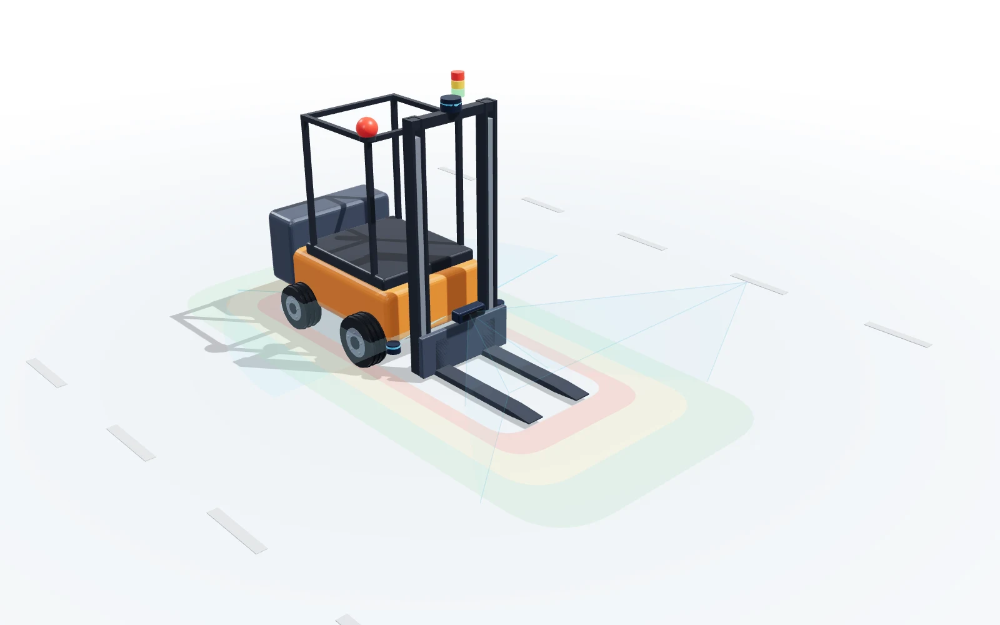

무인지게차 다중 센서 정합
Jetson 기반 대차 인식·분류·액션 워크플로우(SAM3 분할, ToF–RGB 3단계 보정, DINOv2 대차 분류, 비전 서보잉)와 센서 통합, 안전 관리자 초기 설계를 Zenoh 기반 사내 미들웨어 위에서 하나의 통합 흐름으로 연결했습니다. 2026.02 Windows 프로토타입 → 2026.04 팀 레포 → 2026.07 Set3 기준선 → Jetson 운영 저장소 이관 단계를 거쳤고, 현재 고객 현장 시험 운용 중입니다(고객사명 비공개).

사례 PDF 열기